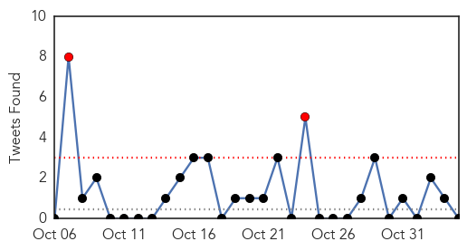
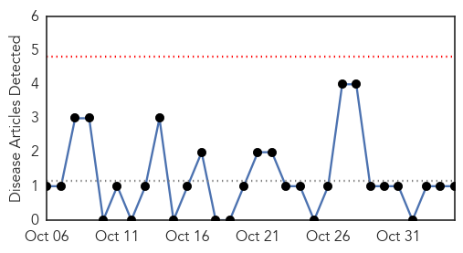
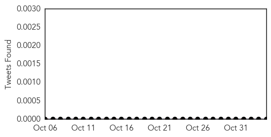

Unknown
30-Day Web Trend
0 alerts, 0 warnings

30-Day Twitter Trend
5 alerts, 0 warnings

Article Locations

Article Confidences

Top Articles:
- 0.955
- Researchers Tap Web Chatter To Figure Out Who's Sick
- 0.955
- Researchers Tap Web Chatter To Figure Out Who's Sick
- 0.955
- Researchers Tap Web Chatter To Figure Out Who's Sick
- 0.955
- Researchers Tap Web Chatter To Figure Out Who's Sick
- 0.955
- Researchers Tap Web Chatter To Figure Out Who's Sick
- 0.955
- Researchers Tap Web Chatter To Figure Out Who's Sick
- 0.955
- Researchers Tap Web Chatter To Figure Out Who's Sick
- 0.955
- Researchers Tap Web Chatter To Figure Out Who's Sick
- 0.955
- Researchers Tap Web Chatter To Figure Out Who's Sick
- 0.955
- Researchers Tap Web Chatter To Figure Out Who's Sick
- 0.955
- Researchers Tap Web Chatter To Figure Out Who's Sick
- 0.946
- Undiagnosed, undertreated Chagas disease emerging as US public health threat
- 0.942
- Kissing Bug that Feeds on People's Faces at Night 'Emerging Health Threat' in US
- 0.940
- 'Kissing Bug' Now Spreading Tropical Disease in U.S.
- 0.939
- 'Kissing Bug' Now Spreading Tropical Disease in U.S.
- 0.920
- Belarusian labs capable of detecting ASF virus genome
- 0.917
- Chicago Tribune
- 0.917
- Chicago Tribune
- 0.917
- Chicago Tribune
- 0.912
- Belarus Suspends Pork Exports to Russia
- 0.910
- The world windows to Thailand
- 0.880
- Chagas Disease Parasite Found in Texas
- 0.866
- Russian troops moving towards Ukraine border -NATO's Stoltenberg
- 0.859
- Experts warn of cases of Chagas disease in U.S.
- 0.850
- Google Updating Flu Tracker To Include CDC Data, New Search Terms
- 0.824
- Food poisoning cases on the rise - Kuwait Times
- 0.804
- Taiwan reports 17th human case of Japanese encephalitis this year
- 0.778
- Parent's Guide to the Flu
- 0.750
- Bonneville County horses euthanized for highly contagious virus
- 0.729
- Beware Of The 'Kissing Bug'! Doctors Fear Triatomine Bugs Have Entered U.S.
- 0.694
- The Real Story of China's Jiang Zemin – Chapter 20 (Page 1)
- 0.679
- Artesunate-Mefloquine Fixed-Dose Combination (ASMQ FDC) Proves Safe and Efficacious to Treat Children in Africa with Malaria
- 0.677
- Essential services hit hard
- 0.673
- International baby trial hopes to find Achilles' heel in HIV
- 0.662
- Confederate flag in Paris police precinct draws scorn
- 0.660
- DOH steps up fight vs malaria, filariasis in CV
- 0.658
- Mexico detains fugitive mayor and wife over missing students
- 0.641
- Florida woman says her daughter is paralyzed because of flu shot
- 0.624
- Forensic DNA test conclusively links snake bite marks on people to species
- 0.623
- Consider Pursuing a Medical Career as a Geriatric Specialist
- 0.599
- Artesunate-Mefloquine Fixed-Dose Combination (ASMQ FDC) Proves Safe and Efficacious to Treat Children in Africa with Malaria
- 0.581
- DNA Test Identifies Snake Bites
- 0.545
- Republicans win control of US Senate in blow to Obama
- 0.545
- An idiot’s guide to the US midterms
- 0.545
- Spain seeks to block Catalan independence vote
- 0.545
- Republicans look to take Senate in US midterm elections
- 0.545
- In pictures: Life goes on amid the rubble in Aleppo
- 0.545
- France urges US coalition support for Syrian rebels in Aleppo
- 0.545
- Burkina's interim military leader wants transition 'within two weeks'
- 0.542
- Nurses support “Let’s PLAN for better care” initiative
Showing top 50 articles...
Top Tweets:
- 0.786
- Fight the flu! Protect yourself & others. Get a flu vaccine every season. http://t.co/NRqMeJDwjz
- 0.609
- Y en español, siga para el Dia de Malaria en las Americas este jueves, 6 de noviembre MalariaDayAmericas http://t.co/ijqFmHJwFN
Pertussis
30-Day Web Trend
0 alerts, 0 warnings

30-Day Twitter Trend
0 alerts, 0 warnings

Article Locations
Article Confidences

Top Articles:
Top Tweets:
-
No tweets found for Nov 04, 2014